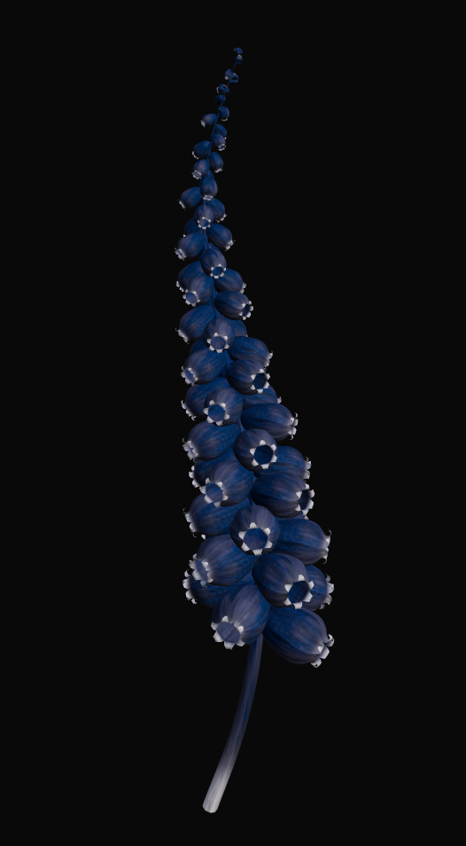
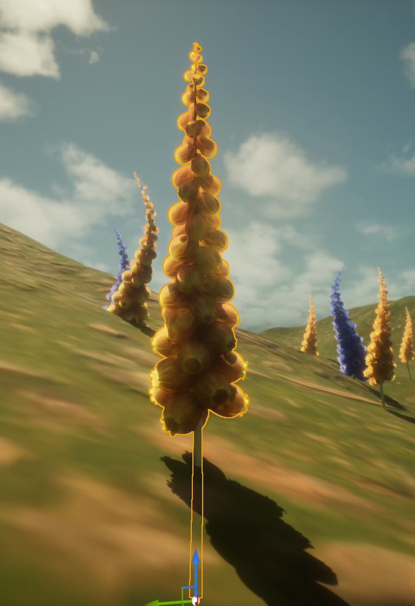
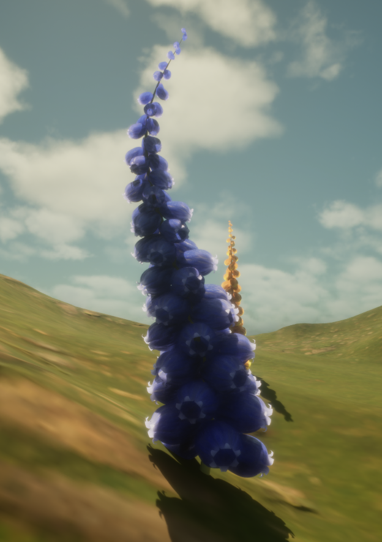

← 部落格 × Special Project | PART1


第 5 週
完整流程（Houdini → Unreal）
2 月 8 日
已完成：
待辦事項：
-
在 Houdini 和 Unreal 中測試 Opacity 遮罩
-
測試從 Houdini 到 Unreal 的完整流程。
-
用 Yichen 的葡萄風信子做出一片花海
Unreal 中的材質（次表面散射）
這週我會嘗試完成從 Houdini 到 Unreal 的完整流程，包括材質與燈光設定，以獲得更好的視覺效果。
我們比較了在 Unreal 中加入次表面散射（SSS）前後的材質。最初的版本看起來比較扁平、不透光；更新後的材質光線擴散更柔和，花瓣也更自然通透，在逆光時尤其明顯。
Danci 分享了她在 Unreal 中設定 SSS 的文件，我們參考並調整成自己的 shader。下面的圖片展示了逆光下的 SSS 效果，光線穿透花瓣，呈現更真實、更透亮的外觀。

Substance Painter


這是我參考 Danci 的做法製作的 Blueprint。
Unreal 中的 USD 動畫與 VAT 動畫比較
我發現當場景中有超過五個 USD 動畫資產時，Unreal 會變得卡頓，所以改用 VAT。我用軟體動力學的方式烘焙第 60–120 格，因為只要拓撲與頂點數保持一致，VAT 會比較穩定；一旦改變就可能出現破綻，所以之後我打算維持固定的拓撲。這是 VAT 動畫在 Unreal 中的最終結果，效能不錯，但我還需要研究怎麼讓它循環播放，以及怎麼程序化生成擺放，因為目前是手動擺的。
我也打算嘗試把 Sanika 的植物匯入 Unreal，但可能沒時間測試 VAT 或開發葉子的 shader，所以會先用 Yichen 的花朵 shader 在 Unreal 中做初步測試。
-
進一步研究 VAT 動畫。
-
用 VAT 建立 Houdini 到 Unreal 的粒子流程。